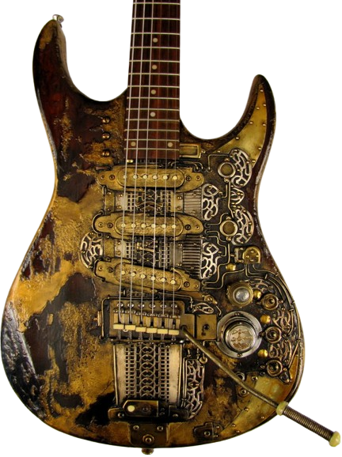

The "Lighthouse" guitar
This unique electric guitar was found in a "crawl space" of an abandoned brothel, where it had been hidden for years. It is so flashy it could be mistaken for a 15th century religious artifact. Its weathered finish and unique design make it a true collector's item. The owner ofthis guitar was arrested because he performed a song that had been outlawed. He sadly passed away while in custody.
Tony Cochran Guitars